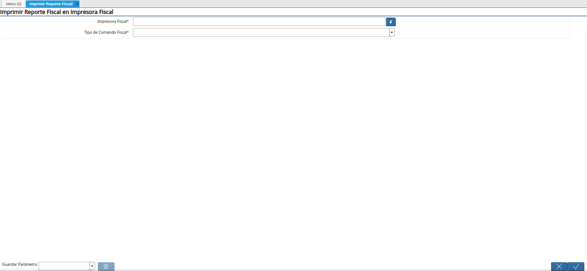
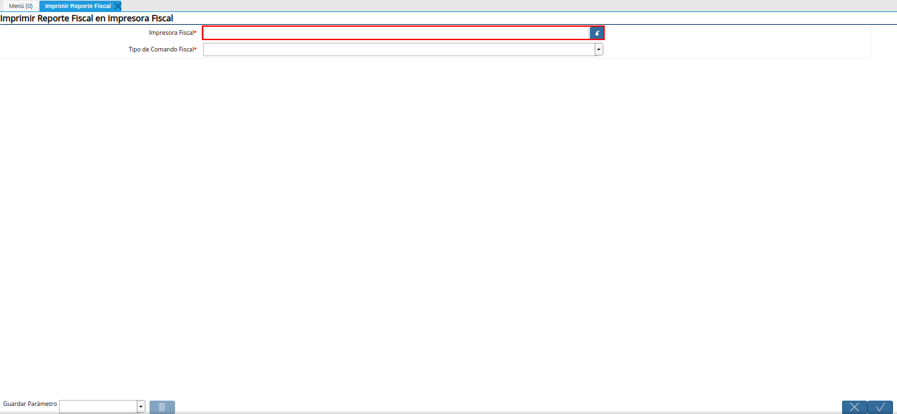
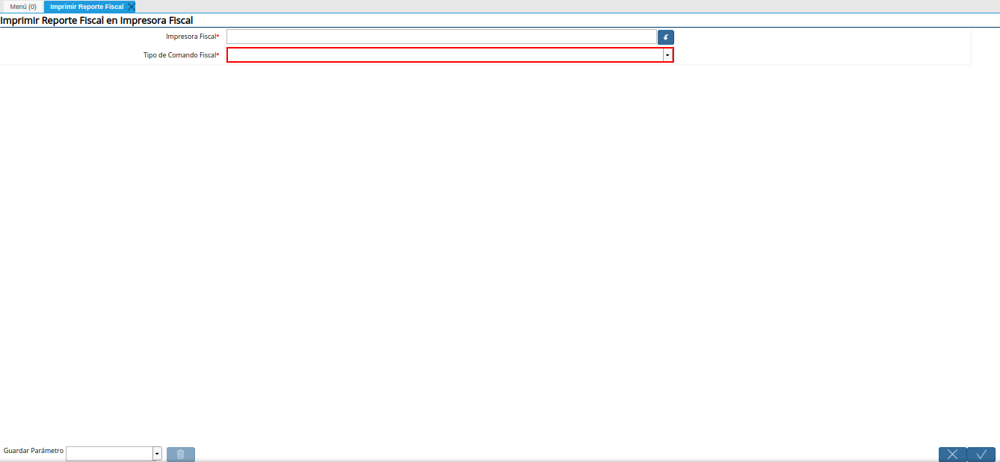
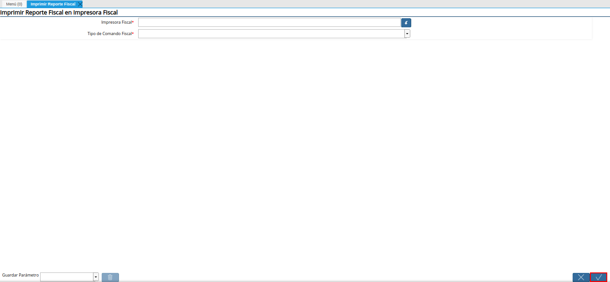

6.4. Imprimir Reportes X y Z¶
El reporte “X”, es un reporte que se utiliza para indicar la apertura del día o del turno en impresora fiscal. El mismo puede ser generado desde ADempiere, en cualquier momento del día, según las reglas del negocio, para conocer el estatus monetario en el que se encuentra la impresora fiscal.
En dicho reporte se indica la fecha y la hora en la cual se genera, el total de los montos correspondientes a los recargos, descuentos, anulaciones, correcciones, ventas, notas de débito y crédito generados en la impresora, detallados por el tipo de impuesto que se aplica y la última numeración impresa correspondiente a la última factura, nota de débito, nota de crédito y reporte fiscal. Así como también, la fecha y la hora en la que fue impresa la última factura.
Al terminar las ventas del día y luego de cuadrar la caja de ventas, se debe generar el reporte “Z”, indicando con este un cierre en la impresora fiscal.
6.4.1. Ejecución del Proceso¶
Ubique y seleccione en el menú de ADempiere, la carpeta “Gestión de Sistema”, luego seleccione la carpeta “Reglas Generales”, por último seleccione la carpeta “Fiscal Device”. Finalmenete seleccione el reporte “Imprimir Reporte Fiscal”.
Imagen 1. Menú de ADempiere

Podrá visualizar la ventana “Imprimir Reporte Fiscal”, con los campos necesarios para generar los reportes “X” y “Z” de la impresora fiscal.

Imagen 2. Ventana Imprimir Reporte Fiscal
Seleccione en el campo “Impresora Fiscal”, la impresora fiscal en la cual requiere generar el reporte.

Imagen 3. Campo Impresora Fiscal de la Ventana Imprimir Reporte Fiscal
Seleccione en el campo “Tipo de Comando Fiscal”, el tipo de reporte que requiere generar en la impresora seleccionada anteriormente.

Imagen 4. Campo Tipo de Comando Fiscal de la Ventana Imprimir Reporte Fiscal
Seleccione la opción “OK”, para generar el reporte requerido en la impresora fiscal.

Imagen 5. Opción
Warning
Recuerde que el reporte “X”, debe ser generado todos los días antes de realizar alguna transacción en el punto de venta, ya que este indica el inicio del día en la impresora.
Adicional a ello, el reporte “Z” debe ser generado todos los días al culminar todas las transacciones que se deban realizar en el punto de venta. Este indica el cierre del día en la impresora.